Imaging deep inside biological tissues
From scattering to wavefront shaping
Biophotonics Research Group, NTUA
2026-07-20
What if all biological tissues were transparent?
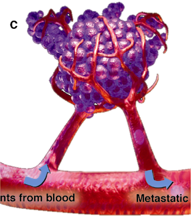
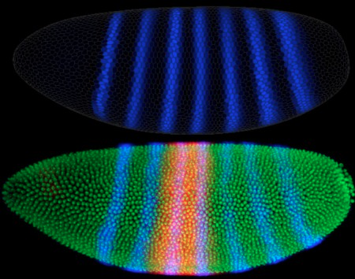
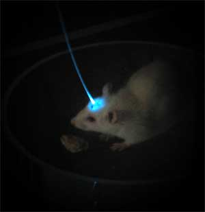
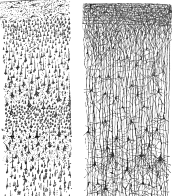
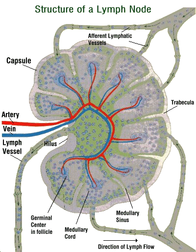
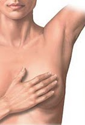
Light propagation through biological tissues
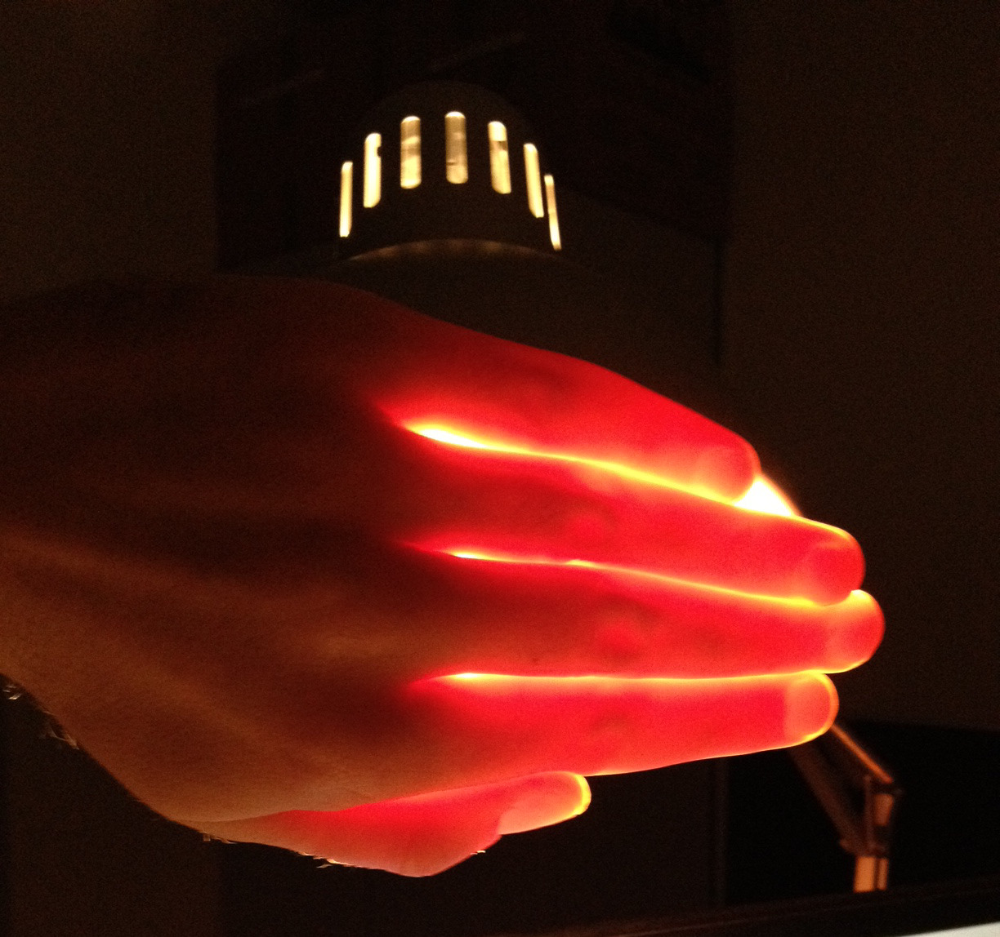
Scattering is ~1000× stronger than absorption in tissue:
Red photons,
- scattering length ~100 µm
- absorption length ~100 mm!
Why aren’t tissues transparent?
rain on windshield: “aberration”
- Turbidity length scale ≫ λ
- Dominated by refraction
- Geometrical optics, ray tracing
fog: “scattering”
- Turbidity: λ-scale (and below)
- Dominated by diffraction
- Described by wave propagation
Strategies to deal with scattering
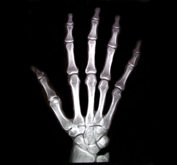
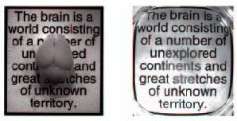
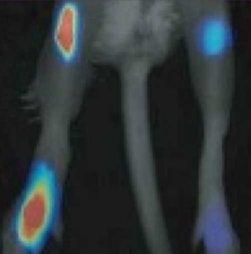
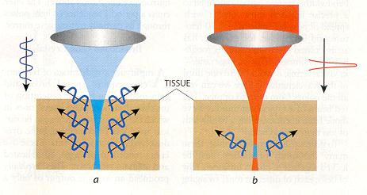
Imaging with ballistic photons
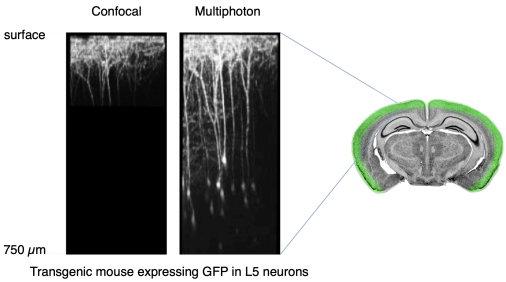
Nonlinear excitation extends ballistic-photon imaging deeper into scattering tissue.
Exponential decrease in ballistic photons
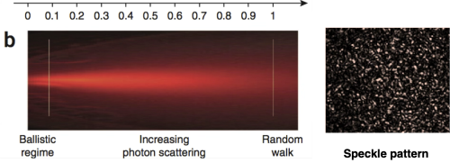
The ballistic component decreases exponentially with imaging depth.
Spherical aberrations
Spherical aberrations in 1P and 2P microscopy
Because fluorescence depends nonlinearly on intensity, 2P microscopy is intrinsically less sensitive to spherical aberrations.
Random aberrations and scattering inside biological tissues
As expected, 2P microscopy is less sensitive to random aberrations and scattering than 1P microscopy.
The picture is not so perfect though…
Under a limited photon budget, 2P microscopy is less robust to scattering than the idealized analysis suggests.
Spherical aberrations correction
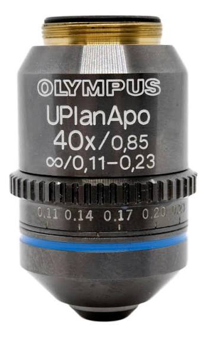
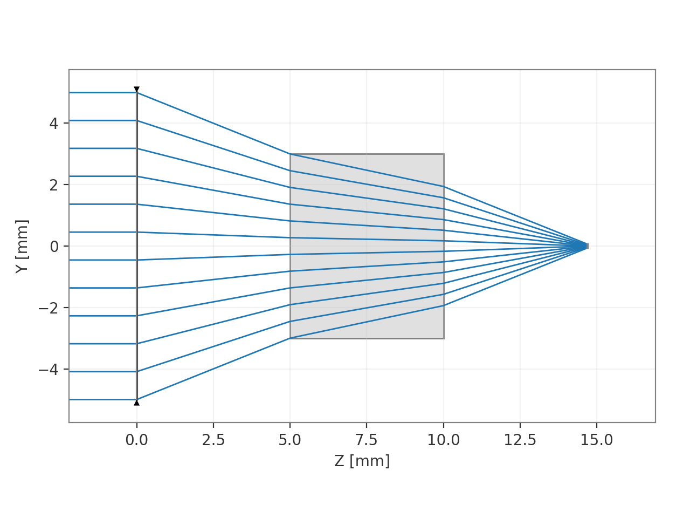
Is optical scattering really an insurmountable problem?
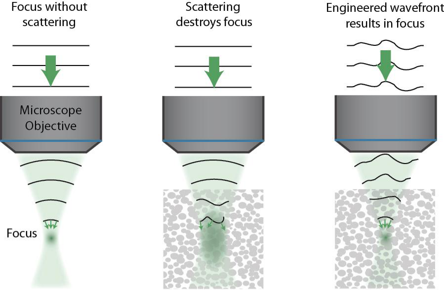
Scattering light is not noise
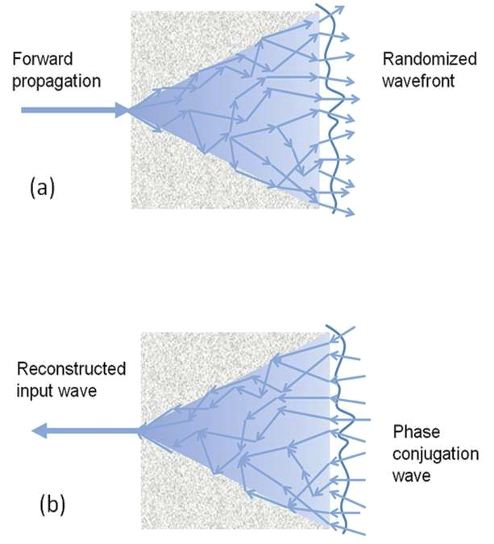
Really?
Reversing the path of a photon after 100 bounces. Imagine trying this with billiard balls.
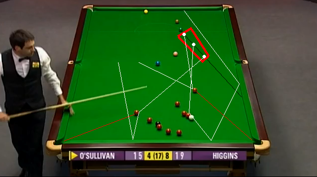
The key is the wave nature of light
The complex-valued E-field
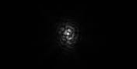
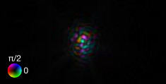
Why aren’t tissues transparent?
rain on windshield: “aberration”
- Turbidity length scale ≫ λ
- Dominated by refraction
- Geometrical optics, ray tracing
Adaptive optics
Booth / Ji / Betzig / Cui / Kubby …
fog: “scattering”
- Turbidity: λ-scale (and below)
- Dominated by diffraction
- Described by wave propagation
Wavefront shaping
Mosk / Vellekoop / Gigan / Katz / Yang …
F-SHARP measures the \(E_{\mathrm{PSF}}\) inside the medium
Focus Scanning Holographic Aberration Probing
(F-SHARP)
- Non-invasively measures the amplitude and phase of the electric field inside the inhomogeneous medium
- This knowledge allows us to correct for aberrations and scattering
- Does not rely on ballistic light
- Correction is not limited by the memory effect (imaging still is)
Papadopoulos, I. N., Jouhanneau, J.-S., Poulet, J. F. A. & Judkewitz, B. Scattering compensation by focus scanning holographic aberration probing (F-SHARP). Nature Photonics.
Image formation in the scanning microscope
Sample
Excitation
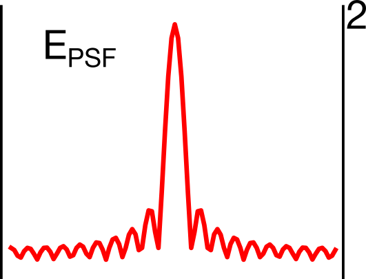
Convolution between excitation and sample
Image
\[ I(x)=\int |E(x-x')|^2\,s(x')\,dx' \]
Imaging inside inhomogeneous media
Sample
Excitation
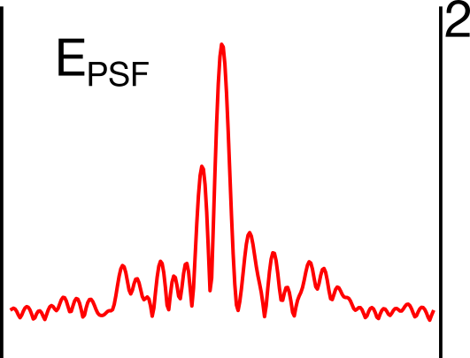
Convolution between excitation and sample
Image
\[ I(x)=\int |E(x-x')|^2\,s(x')\,dx' \]
2P imaging through inhomogeneous media
Sample
Excitation
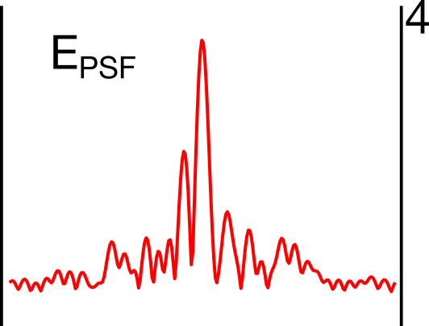
Convolution between excitation and sample
Image
\[ I(x)=\int |E(x-x')|^4\,s(x')\,dx' \]
4th power because of the nonlinear response
Can we image the complex PSF?
take a two-photon microscope…
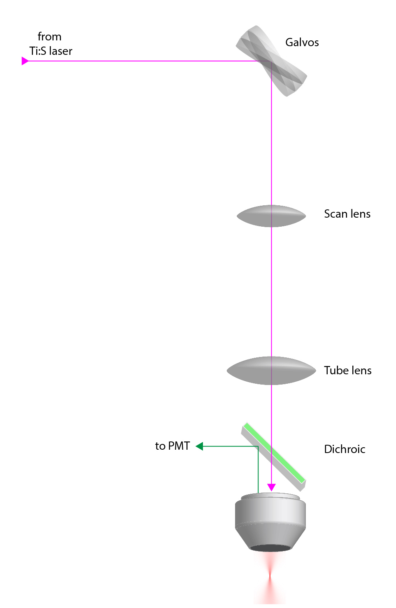
…add spatial light modulator
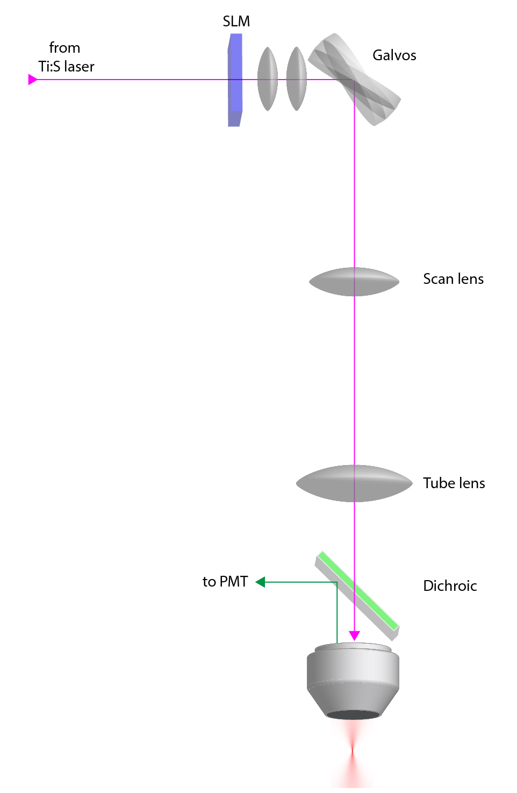
SLM: e.g. 2 Mpixel LCoS
F-SHARP Microscopy
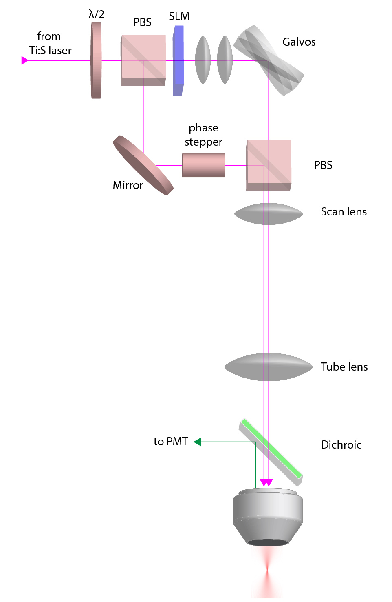
- split beam
- one stationary, one scanning
- one strong, one weak
- path-length matched
- phase-stepper
Step 1: Introduce stationary beam in nonlinear medium
Scanning beam - \(E_1\)
Stationary beam - \(E_2\)
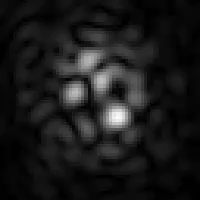
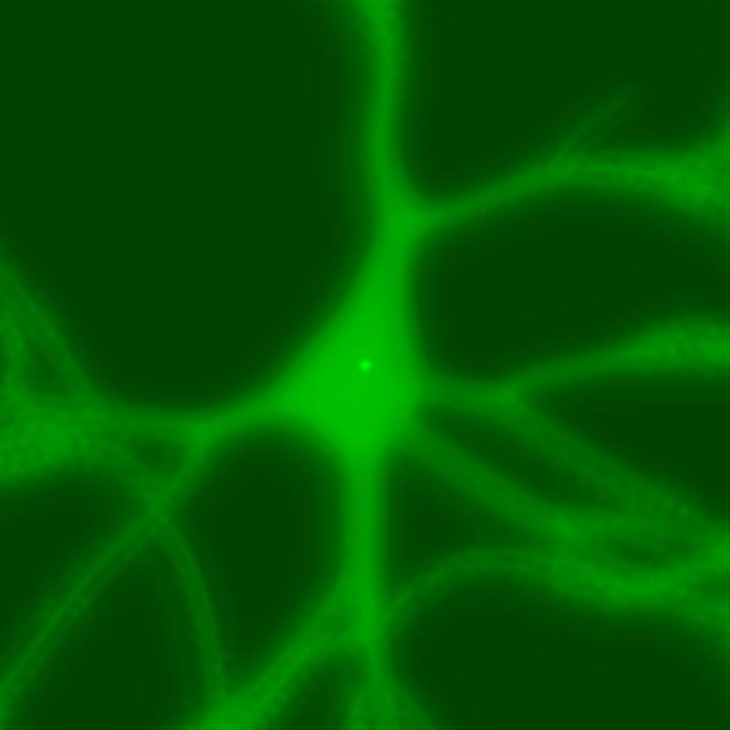
\[ I(x)=\int|\underbrace{E_1(x-x')}_{\text{scanning}}+\underbrace{E_2(x')}_{\text{stationary}}|^4\, s(x')\, dx' \]
Step 2: Change the power ratio between the two beams
Make stationary beam intensity lower. Example: 1/10 of original intensity (~1/3 of original amplitude, 1/100 of 2P excitation efficiency)
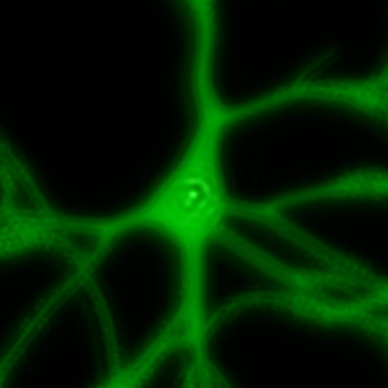
More complex information is contained in the center compared to before
F-SHARP through chicken muscle
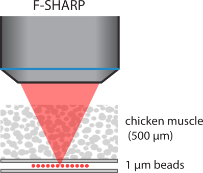
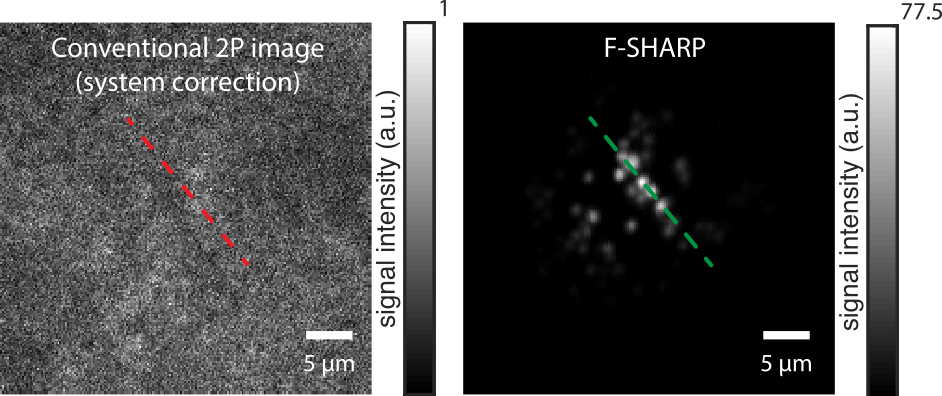
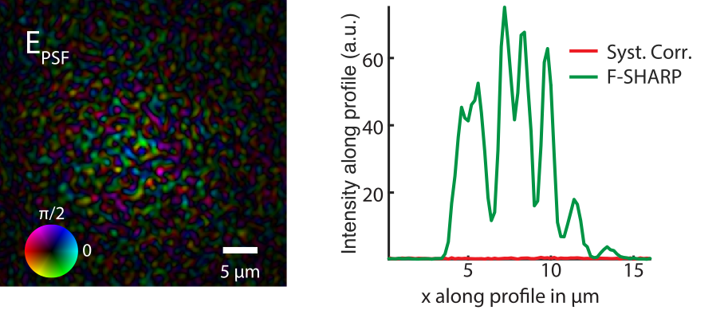
In vivo F-SHARP zebrafish larva imaging
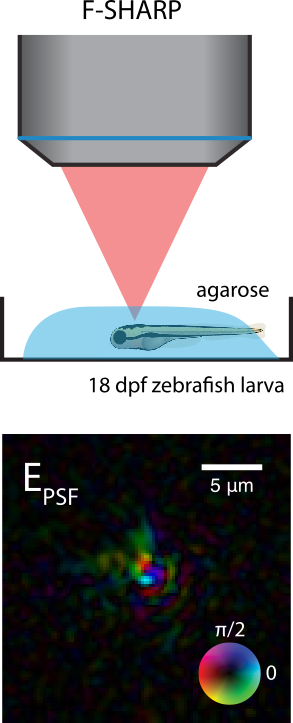

In vivo F-SHARP mouse imaging
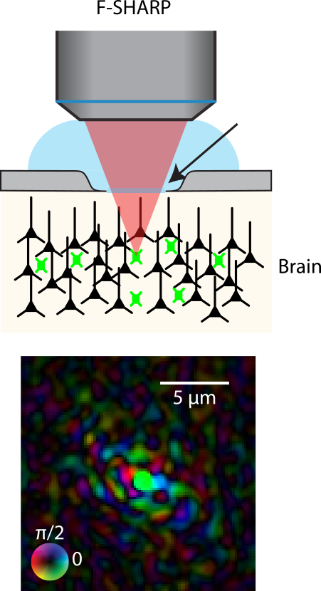
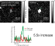
In vivo F-SHARP mouse imaging through thinned skull
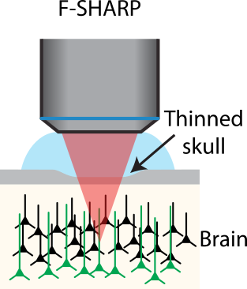
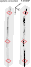
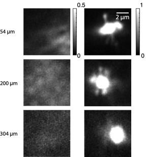
Following the same dendrite through the skull
Further F-SHARP developments
Dynamic conjugate F-SHARP for increased FOV
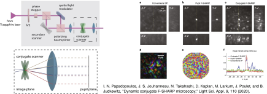
Further F-SHARP developments
3P-FSHARP
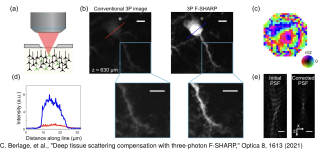